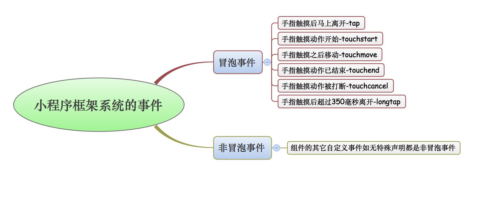
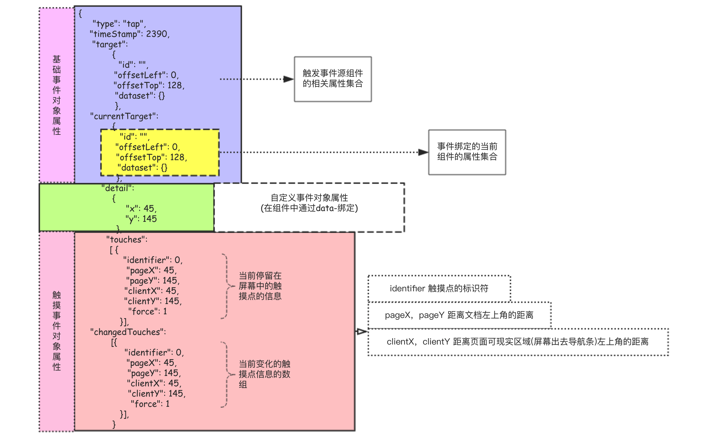

本文介绍小程序框架中的事件和事件对象，包括事件的分类，事件的绑定和事件对象的内部细节。
1.0 事件绑定
小程序官方对WXML事件的定义
❏ 事件时视图层到逻辑层的通信方式。
❏ 事件可以将用户的行为反馈到逻辑层进行处理。
❏ 事件对象可以携带额外的数据信息，例如id、dataset和touches等。
❏ 事件可以绑定到组件上，当组件上对应事件被触发后，将执行逻辑层中对应的事件处理函数。
小程序中的事件系统和前端开发中HTML里DOM事件系统很相像，在DOM系统通过on + "事件类型"的方式(ex：onclick)来给标签注册不同类型的事件，在小程序中我们通过bind|catch + "事件类型(名)“的方式(ex：bindtap)来给组件绑定不同的事件。

小程序中的事件分为冒泡事件和非冒泡事件，如果是冒泡事件的话，那么当组件上对应的事件被触发后该事件会向其父节点传递，直到顶层节点；如果是非冒泡事件的话，则不会向父节点传递。
绑定事件的时候可以使用bind或者是catch关键字，其中bind绑定的事件不会阻止冒泡事件向上传递，而catch绑定的事件会阻止冒泡事件向上传递。
1
2
3
4
5
6
7
8
9
10
11
12
13
14
15
16
17
18
19
20
21
22
23
24
25
26
27
28
29
30
31
32
33
34
35
36
37
38
39
40
41
42
43
44
45
46
| //wxml文件中的内容
<view class='box1' catchtap='box1click'>外层标签
<view class='box2' catchtap='box2click'>内部标签
<view class='box3' catchtap='box3click'>核</view>
</view>
</view>
//wxss文件中的内容
.box1{
width: 500rpx;
height: 300rpx;
background: red
}
.box2{
width: 400rpx;
height: 200rpx;
background: green
}
.box3{
width: 100rpx;
height: 100rpx;
background: red
}
//js文件中的内容
Page({
data: {},
box1click:function(){
console.log("box1click");
},
box2click: function () {
console.log("box2click");
},
box3click: function () {
console.log("box3click");
}
|
2.0 事件对象
当组件上绑定的事件被触发后逻辑层对应的事件处理函数将接受到一个事件对象(events),在事件处理函数中我们可以提供一个形参并通过该参数获取此事件对象。
事件对象的内容主要由**基础事件对象属性(BaseEvent)、自定义事件对象属性(CustomEvent)和触摸事件对象属性(TouchEvent)**三部分组成。
1
2
3
4
5
6
7
8
9
| //wxml文件
<view bindtap='click'>我是view</view>
//js文件
Page({
click:function(event){
console.log(event); //打印当前的事件对象
console.log(JSON.stringify(event,null,4)); //把当前的事件对象转换为JSON打印
}
|

这里列出通过组件中data-*属性来给逻辑层事件处理函数传递数据的示例代码。
1
2
3
4
5
6
7
8
9
10
11
| //wxml文件内容
<view data-id='123' data-index='22' bindtap='click'>我是view</view>
//js文件内容
Page({
click:function(event){
console.log(JSON.stringify(event.currentTarget.dataset));
}})
//打印输出内容
{"id":"123","index":"22"}
|